Tools for Reproducible Research
Eric Crandall
What is Reproducibility?
Gandrud 2014 gives this definition (especially for data analysis and computer science):
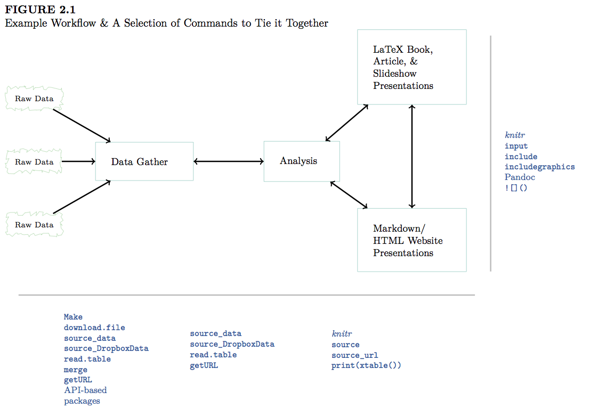“The data and code used to make a finding are available and they are presented in such a way that it is (relatively) straightforward for an independent researcher to recreate the finding.”
GandrudFigure2.1
This actually seldom happens.
Consider two interesting articles by Tim Vines:
Contacted Authors of 516 datasets with morphological data for discriminant analysis published between 1991 and 2011: received only 101 datasets!
“of 516 articles published between 2 and 22 years ago…the odds of a data set being extant fell by 17% per year.”
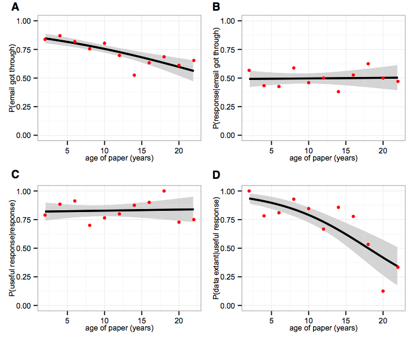Vines et al. 2014: Figure1
Same thing happens for genomic metadata
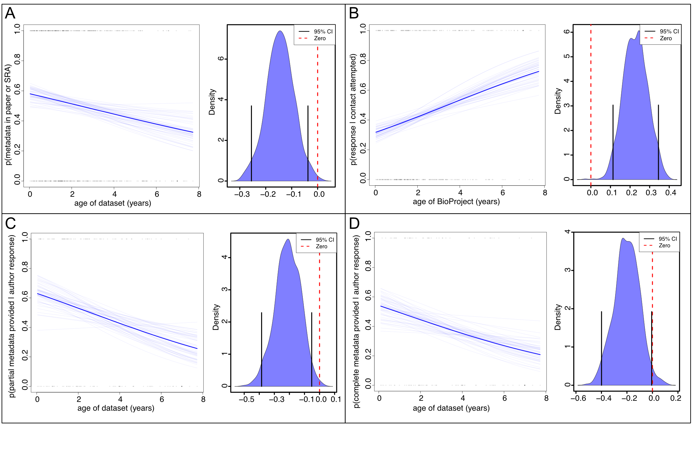Crandall et al. in review: Figure 4
Data not only need to be easily available, but methods also need to be reproducible
Gilbert et al. 2012 - Recommendations for utilizing and reporting population genetic analyses: the reproducibility of genetic clustering using the program structure
- “we reanalysed data sets gathered from papers using the software package ‘structure’… 30% of analyses were unable to reproduce the same number of population clusters.”
Scientific articles have fairly detailed methods sections, but those are typically insufficient to actually reproduce an analysis.
Scientists owe it to themselves and their community to have an explicit record of all the steps in an analysis done at a computer.
Why are Open Data and Reproducibility Important?
For Science?
- Standard to judge scientific claims
- Data and methods need to be openly available in order to be reproducible
- Avoiding effort duplication
- Encouraging cumulative knowledge development
Sea of Doubts
Open Science
- Open Data
- Reproducible Methods
- Open Access Publications
Big Data
Why are Open Data and Reproducibility Important for You?
Better work habits
- better, clearer documentation
Better teamwork
Re-analysis is easier
Higher research impact
Tools for Research Reproducibility
- Open Source Everything
- Unix operating system
- GitHub and git - version control
- Markdown and LaTeX
- R language
- Rstudio, knitR, Quarto
- Creative Commons Licensing
- Online Repositories (Dryad, Genbank,GBIF, GEOME, new ones all the time)
Get started with these as a grad student/postdoc!
Stop Using Excel!
OK, maybe not entirely - its good for quick visualizing, data entry, etc.
It tends to be a crutch.
- Stops you from thinking carefully about your data structure
- Stops you from learning better ways to handle data
Proprietary software
Easy to mess up your data, no provenance
At least keep your raw data in text format
Learn to Code
Any language.
R is a great starting place for scientists.
Here is code to paste cells from excel into an R data frame!
Make a plan for managing data in each project
- Keep all data (and ideally analyses) in a text file
- Think about your file structure
Gandrud Figure 1
Make a plan for managing data in each project - 2
- Document everything
- Explicitly tie your files together
- Keep raw data raw! All changes should be documented in a script.
- Data management plans are now explicitly required by the NSF and other funding agencies!!! 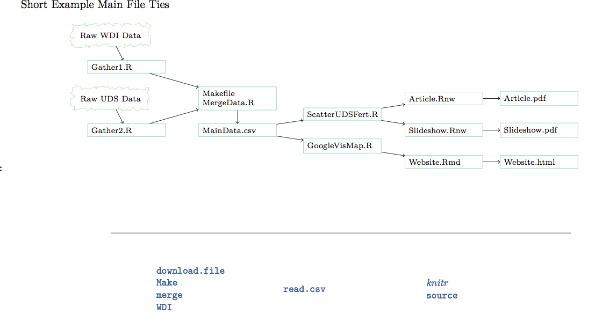
Keep an electronic (online) notebook
Document everything!!
- repeat your own analysis!!
- show others what you did
Dokuwiki is great (keeps things in plain text)
I now use GitHub and Quarto notebooks with Rmarkdown
Communicate Your Science
Start doing outreach now!
NSF vs. House Committee on Science

Science Mistrust
Publish Preprints and Open-Access Articles
-
- Physics moved to pre-print servers a long time ago!
- Open access journals (e.g. PLoS) were supposed to be a stop-gap measure!
Many schools now have open-access funds
Most journals only own the “typesetting” (because that is all they did!).
- Therefore you may legally post a pre-print
- BiorXiv
- PeerJ
- Most universities now have pre-print platforms
ResearchGate, Academia.edu etc. are social networks whereby you are sharing articles with your “friends”
Rstudio
R studio is an Integrated Developer Environment (IDE) for R that sits on top of R and makes it easier to work.
Organizes your work in R in neatly-contained packages of work (typically data and code) called “projects”
Nothing mysterious about these—just collections of files stored together in a single directory on your computer.
Git and GitHub
Thanks to Eric Anderson for portions of the git/github part of this lecture
Thanks to Happy Git and Github for the useR by Jennifer Bryan for other portions!

Watch Me Diff

Git
A version control system, or VCS, tracks the history of changes as people and teams collaborate on projects together. As the project evolves, teams can run tests, fix bugs, and contribute new code with the confidence that any version can be recovered at any time. Developers can review project history to find out:
- Which changes were made?
- Who made the changes?
- When were the changes made?
- Why were changes needed?
All of this is stored as “commits” inside an invisible directory called .git
A typical VCS for a non-computer programmer
Start writing
my_manuscript.doc.At some point worry that MS Word is going to eat your file, so,
- Make a “backup” called
my_manuscript_A.docx
- Make a “backup” called
Then, before overhauling the discussion, save the current file as
my_manuscript_EDC.docx.Email it to your coauthors and then have a series of files with other extensions such as the initials of their names when they edit them and send them back. Save as
my_manuscript_EDC_MM_RGP.docxEtc.
Disadvantages:
- Hard to find a good record of what is in each version. (Wait! I liked the introduction I wrote three weeks ago…where is that now?)
- A terrible system if you have multiple files that are dependent on one another
- Now better with Google Docs etc.
GitHub (and others) is a distributed version control system (DVCS)
Git stores “snapshots” of your collection of files in a repository, which can be stored on GitHub
For our work, the “collection of files” will be “the stuff in your RStudio project”
- Another reason it is nice to keep everything you need for a project together in a “project directory”
- This makes it perfect as an electronic notebook especially because nothing is ever erased, really
When you clone or repository, you get the whole version history
Git has well-developed features for merging changes made in different repositories
Unlike once popular centralized version control systems (rcs, cvs, subversion), DVCSs like GitHub don’t need a constant connection to a central repository. Developers can work anywhere and collaborate asynchronously from any time zone.
Github as a distributed version control system
Nate Silver of fivethirtyeight.com once called github “Facebook for nerds”
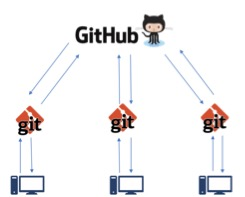Github DVCS
GitHub (and others) is a distributed version control system (DVCS)
Git and a DVCS system allow multiple people to work on multiple versions (“branches”) of a piece of software at the same time, without breaking the main branch. This approach can be used to add features or fix bugs.
To eliminate unnecessary work, Git and other VCSs give each contributor a unified and consistent view of a project, surfacing work that’s already in progress. Seeing a transparent history of changes, who made them, and how they contribute to the development of a project helps team members stay aligned while working independently.
Without version control, team members are subject to redundant tasks, slower timelines, and multiple copies of a single project.
GitHub Example for Software
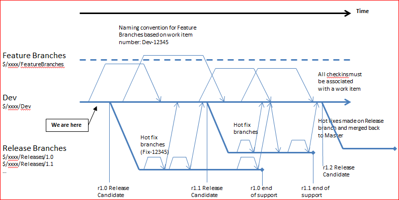The Github Flow
An example from my research
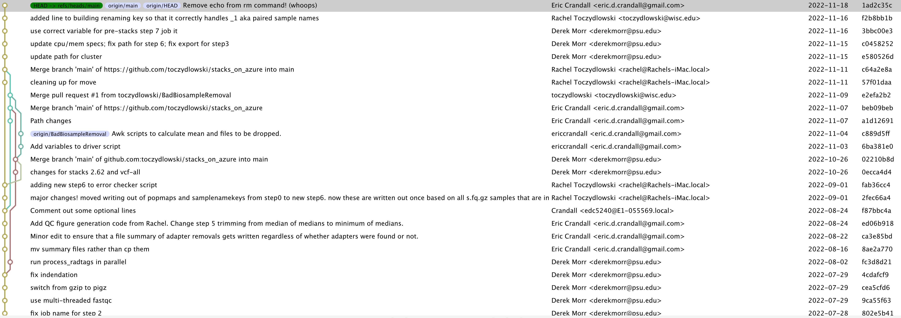Stacks on Azure Github Repository
What’s a repository?
A repository, or Git project, encompasses the entire collection of files and folders associated with a project (i.e. a directory), along with each file’s revision history (stored in the .git directory)
The file history appears as snapshots in time called commits, and can be organized into multiple lines of development called branches.
Because Github is a DVCS, repositories are self-contained units and anyone who owns a copy of the repository can access the entire codebase and its history.
Using the command line or other ease-of-use interfaces, a git repository also allows for: interaction with the history, cloning, creating branches, committing, merging, comparing changes across versions of code, and more.
Working in repositories keeps development projects organized and protected. Developers are encouraged to fix bugs, or create fresh features, without fear of derailing mainline development efforts.
Through platforms like GitHub, Git also provides more opportunities for project transparency and collaboration. Public repositories help teams work together to build the best possible final product.
The Github Flow
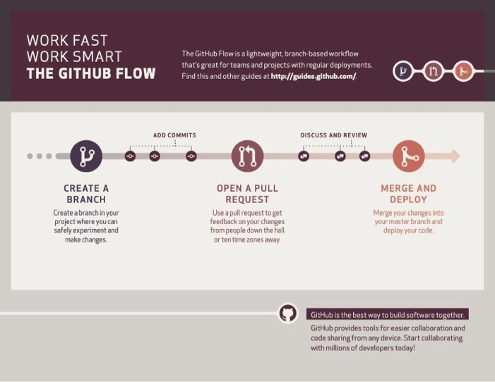The Github Flow
The GitHub Flow
The GitHub flow has six steps, each with distinct benefits when implemented:
Create a branch:Topic branches created from the canonical deployment branch (usually master) allow teams to contribute to many parallel efforts. Short-lived topic branches, in particular, keep teams focused and results in quick ships.
Add commits:Snapshots of development efforts within a branch create safe, revertible points in the project’s history.
Open a pull request: Pull requests publicize a project’s ongoing efforts and set the tone for a transparent development process.
The GitHub Flow
Discuss and review code:Teams participate in code reviews by commenting, testing, and reviewing open pull requests. Code review is at the core of an open and participatory culture.
Merge:Upon clicking merge, GitHub automatically performs the equivalent of a local ‘git merge’ operation. GitHub also keeps the entire branch development history on the merged pull request.
Deploy:Teams can choose the best release cycles or incorporate continuous integration tools and operate with the assurance that code on the deployment branch has gone through a robust workflow.
Alternatives to Github exist!
- Bitbucket
- Gitlab
- GitBucket (yes, its a thing)
All work on a “freemium” model in which they provide free service to low-end users (like us), but charge for services needed by power users (like private repositories, more file storage space)
Also, please note, while github can store data files up to 100 MB, it is not meant to be a repository for data! Consider keeping raw data files on a RAIDed (backed up) server (like Cassiopea!). You can also put big files in your .gitignore file so that they aren’t transferred to github.
Git/GitHub Tutorial
Do this in GitHub
- Go to https://github.com/ericcrandall/reproducible_research_practical
- Click “Fork” in the upper right-hand corner and follow dialogue prompts to create a forked repository in your account
Do This in RStudio
Select File -> New Project
Create project from: Choose “Version Control” {.smaller}
- Choose “Git”
- Input the url of this repository 1.https://github.com/yourusername/reproducible_research_practical
- and put it somewhere
- I suggest a directory coming off your home directory called
github. - (browse to where you want to put it in the “create project as subdirectory of:”)
- So it should be in
yourhome/github/reproducible_research_practical - Hit
Create Project
The status/staging panel
RStudio keeps git constantly scanning the project directory to find any files that have changed or which are new.
Some symbols:
- Blue-M: a file that is already under version control that has been modified.
- Yellow-?: a file that is not under version control (yet…)
- Green-A: a file that was not under version control, but which has been staged to be committed.
- Red-D: a file under version control has been deleted. To make it really disappear, you have to stage its disappearance and commit.
RStudio Git Interface
Staging Files
You can click the check box next to various files to stage them to be part of a commit.
- I generally stage all changes for every commit
- But one could consider of being more strategic…
- At the command line, staging or adding all changed files to a commit is achieved by:
The Commit window
- Click “commit” to reach the commit window
- Shows a “diff” of your changes.
- In other words, what has changed between the last committed version of a file and its current state.
- Green = additions, red = deletions
- Holy smokes this is convenient
- (Note: all this output is available from the command line, but the Rstudio interface is very nice, IMHO)
Making a Commit
Super easy:
- After staging the files you want to commit…
- Write a brief message (first line short, then as much after that as you want) about the new changes and hit the commit button.
Tradition is to use present tense when describing your changes.
- as in “Add new data file, update file slurping code”
This can be really handy when trying to find where you made an error!
Spending a little time to write informative commit messages can pay off.
At the command line, a commit is achieved thusly:
A commit analogy

Using a Git commit is like using anchors and other protection when climbing. If you’re crossing a dangerous rock face you want to make sure you’ve used protection to catch you if you fall. Commits play a similar role: if you make a mistake, you can’t fall past the previous commit. Coding without commits is like free-climbing: you can travel much faster in the short-term, but in the long-term the chances of catastrophic failure are high! Like rock climbing protection, you want to be judicious in your use of commits. Committing too frequently will slow your progress; use more commits when you’re in uncertain or dangerous territory. Commits are also helpful to others, because they show your journey, not just the destination.
–Hadley Wickham (PBUH), 2015
Pushing and Pulling
Everything we’ve done so far has been local. We’ve staged files (
git add) and made commits (git commit -m "message"), which got added to our invisible.gitdirectory.Now we want to
pushthese up to Github. Easy - just use the green arrow, or at the command line,git push.If you want to get all fancy, you could type
git push origin mainoriginis the name of the remote site (in theory you could have more than one)mainis the name of the branch.
If you want to bring down changes from Github, its just the blue arrow, or
git pull.- Important get in the habit of pulling before doing anything else when you start working on a project. Otherwise you might get …dun dun dun… merge conflicts
- Use
git pull --ff-onlyto categorically avoid pulling commits that have merge conflicts (but you’ll still have to deal with it eventually)
Dealing with Merge Conflicts
There you are, working away, when you try to push a commit and get:
$ git push To https://github.com/YOU/REPO.git ! [rejected] main -> main (fetch first) error: failed to push some refs to 'https://github.com/YOU/REPO.git' hint: Updates were rejected because the remote contains work that you do hint: not have locally. This is usually caused by another repository pushing hint: to the same ref. You may want to first integrate the remote changes hint: (e.g., 'git pull ...') before pushing again. hint: See the 'Note about fast-forwards' in 'git push --help' for details.This means that someone (you on another computer or a collaborator), has changed the same file(s) that you have changed. In the abstract, this is the state on GitHub:
A -- B -- C (on GitHub)And this is your local state:
A -- B -- D (what you have)This situation is best avoided, either by pulling often, communication with your collaborator or through the use of branches (coming up).
Dealing with Merge Conflicts
- So you try to pull and you get: 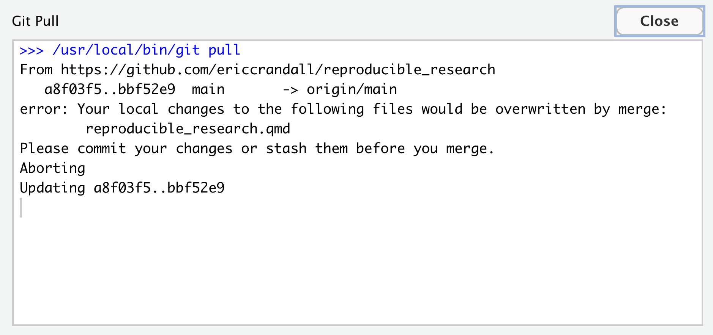
- You have two choices:
- stash your changes (basically, hide them for a bit, or lose them forever)
- commit your changes, and then handle the merge.
Dealing with Merge Conflicts
- Stashing basically lets you punt
- Commit your conflicting changes and then deal with the merge conflict.
- If you’re lucky, you were editing, different parts of the file. In this case, git will figure this out, and just auto-merge for you. 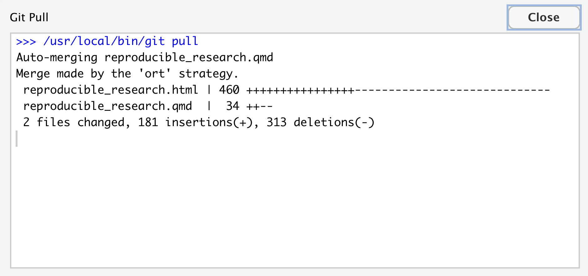
- If not, then git will highlight the areas of conflict for you, allowing you to fix the problem manually (we’ll do this together)
Dealing with Merge Conflicts
- If not, then git will highlight the areas of conflict for you, allowing you to fix the problem manually (we’ll do this together)
Time Travelling
Having learned how to keep a history of your work, its useful to know how to access it. This is where RStudio and GitHub become extra useful, because they provide nice GUI interfaces to your history
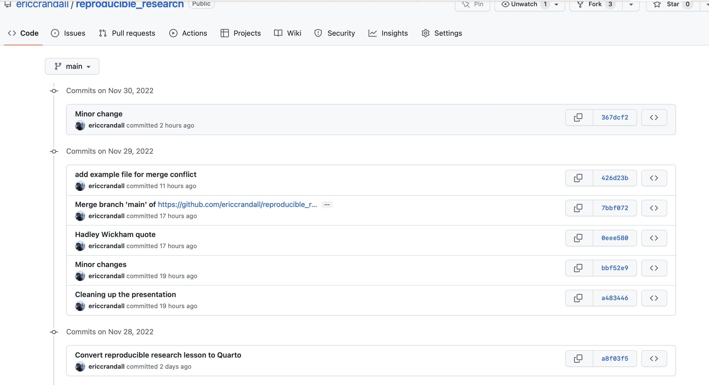
You can visit these old commits and individual files in GitHub, download them, and get back code and ideas that you might have deleted in the current version of your repository!
Time Travelling
From the commmand line you can also
git logOnce you have the hash of the commit (e.g. 57faaD01) you can use
git checkout` <COMMIT#> <path/to/the/messed/up/file>to get back old commits and files as well. But this leads you into a confusing place of working from a “detached head” 😱. Better to do this on Github until you are more comfortable with git.
Branches and Pull Requests
- Create a new branch
git branch fix_issue_105
git checkout fix_issue_105Work on your code, committing as you go.
Then issue a pull request to the owner of the repository (this is done on github). You may need to write a justification of the changes you’ve made.
The owner of the repository will then be able to review all of the changes you’ve made (they’ll see a diff, just like you do when you commit), and can then choose to merge your code into the main branch.
How does git store and keep track of things
- Everything is stored in the .git folder inside the RStudio project.
- The “working copy” gets checked out out of there
- Committed changes are recorded to the directory
What is inside of the .git directory?
We can use R to list the files.
[1] "COMMIT_EDITMSG"
[2] "config"
[3] "description"
[4] "FETCH_HEAD"
[5] "HEAD"
[6] "hooks/applypatch-msg.sample"
[7] "hooks/commit-msg.sample"
[8] "hooks/fsmonitor-watchman.sample"
[9] "hooks/post-update.sample"
[10] "hooks/pre-applypatch.sample"
[11] "hooks/pre-commit.sample"
[12] "hooks/pre-merge-commit.sample"
[13] "hooks/pre-push.sample"
[14] "hooks/pre-rebase.sample"
[15] "hooks/pre-receive.sample"
[16] "hooks/prepare-commit-msg.sample"
[17] "hooks/push-to-checkout.sample"
[18] "hooks/update.sample"
[19] "index"
[20] "info/exclude"
[21] "logs/HEAD"
[22] "logs/refs/heads/main"
[23] "logs/refs/remotes/origin/HEAD"
[24] "logs/refs/remotes/origin/main"
[25] "logs/refs/stash"
[26] "objects/00/c833cdc9c85ca99a4e952eb93724c5b7e64003"
[27] "objects/00/f53ce8066a38abfe40f99ffb0a445aa32b8011"
[28] "objects/01/0c4a9f740de46fba09b120c87745f81e379219"
[29] "objects/01/86bec03cdf4764f5dc0e8a08db85cbaa169ded"
[30] "objects/02/70d3cbc9f83e4c2eb1e11d0a147c31e5a644c0"
[31] "objects/02/b22fafdaa14deefacfd07ba4646b3305264957"
[32] "objects/02/ff878d26e43445f06c897573524e5fc1db8783"
[33] "objects/04/6d3bf90284aef41522c47949a8608c7d52b36c"
[34] "objects/05/710cb803af44e68b107c56cca1040d21e93381"
[35] "objects/06/bae1baeaa39a831a77e196d8a9b56dd5d82063"
[36] "objects/07/be502016b467a6b0209f71f70d62a224f20da1"
[37] "objects/07/f549fb89433f505abf9f1d7a6ee80a7bdea7b6"
[38] "objects/08/5db806f786aee8048a6cd2bb3010c676b1d963"
[39] "objects/08/765e73984ac6026bb49ff7bcc96db8b21f3b55"
[40] "objects/09/fcd4e5797028ab723bb649a13d3664be9792ab"
[41] "objects/09/fff7c963992c4e2f1fda648f3629572d8a8777"
[42] "objects/0a/472e40866929106a96f6a14190036b779f7e89"
[43] "objects/0a/e2482ef31683ba38831fe6481c9c46aa52f928"
[44] "objects/0b/6cae749aa84d8db80f1cd4e6a56e5c662922b6"
[45] "objects/0c/9fbd7fa553ddd0bb61dc81cf7a3c0d33ce881b"
[46] "objects/0d/4624d63e2b03840c1b640d8ffdb86aa3675969"
[47] "objects/0e/ee5804f319caa37ebedbfc3d15781f84a7236f"
[48] "objects/10/24720f14fe944bc94eb8503b80fb7978935d49"
[49] "objects/10/78d808cdf738de4950b7db492b9e1cea932da7"
[50] "objects/10/c739a3d513015f61e52b5d978604f9d0d8f291"
[51] "objects/11/04e074f017a8b89dfb5e1bbff3cdd0b7595887"
[52] "objects/11/bcf458a321651e68c7627ef6890bafccef0b18"
[53] "objects/12/45b0d634f5ddd6cf65797e770654da022b3338"
[54] "objects/12/5e9f6a91c4b1e1ab3f31e59a76f357d3307501"
[55] "objects/12/6a17c2f52cf6267494312bc9b44968c01ff550"
[56] "objects/13/23e55fd16b1e4f7965bacc0223492a178de5dd"
[57] "objects/15/34b64befb117c4eb845139e377c306e2040b88"
[58] "objects/15/9198a477991d8865e56547d481867c1ae29e58"
[59] "objects/15/98c0325c243a2defe9b0ff230098eeb0eb3a97"
[60] "objects/16/a9cdea4ad9456d9f9c661f24a9a3eb57e689c6"
[61] "objects/17/0b520061b66e1d24e888836e893e5a865c01bb"
[62] "objects/17/64f14d7dee3cbf2454fb7eef31ac13368f5c58"
[63] "objects/17/eff864d62c819a6395462b1d40d835385c1f5a"
[64] "objects/18/9cf4e940a6c7251160ad4017ff610abe1aef6e"
[65] "objects/18/d4dc7893adb93ee7feb3beb066d63de403e3f1"
[66] "objects/19/85083191e8b2f5505f36625f7edcb1a0d6412f"
[67] "objects/1b/29964aef91503f04b7aed5c9f9972bf330cfa0"
[68] "objects/1b/b8e3b6473685bf17a64272939260c180c30769"
[69] "objects/1d/9dc1e2f471eaff02296aad08b1cf09920042dd"
[70] "objects/1e/8503475098ee3316f69b57a2253b4e7fb863bd"
[71] "objects/1f/19536c97d36fefc8c2a62b081bf44333b95905"
[72] "objects/1f/3ede9a9f986201addf75b29e70fa8c2a8477f9"
[73] "objects/1f/e7f5cdc14500721c71f68e4ff93f370bda114d"
[74] "objects/20/f35d7b9eecbeedd6c5a4d94e8991d9bc5d4865"
[75] "objects/21/f7e34c7ff8b756b03724b544f5e2ce2b9b082f"
[76] "objects/22/69d66967635e9bde6edb948cd93b0ae1978dfc"
[77] "objects/22/9ad01e4e7c3d10e46216f67aa550c2ad416295"
[78] "objects/23/e87f52e2961d8d6843009de2318156d92c86f4"
[79] "objects/23/f63b97abe22805008c32a9658bfc895538b6aa"
[80] "objects/24/13c5ed113f29bde71e567a10c64d0a38fbc565"
[81] "objects/24/a63a9c30309dbdddd9dcf7186f9c53202daf4c"
[82] "objects/24/f75cad5b119c80678c244d47312d0ad02fc670"
[83] "objects/25/023e5fbbdcb1e6aec7449baea525d75ce1f0b0"
[84] "objects/26/2b2cfc8ba24c825f6b64acbe3ca395b7ff2f31"
[85] "objects/27/89d1bafa56cc1d94dcef97ddbeacb4006dc741"
[86] "objects/27/c09219d06ac5f900020c43adc8be755cf77969"
[87] "objects/28/a42218c9c8deeca5c2155987d12b36339d114b"
[88] "objects/28/bfca5af2c8664de4e7f3920e7694f29d141d12"
[89] "objects/28/c1c4bc730d7a0f9aabfcf2529555ca7ca8b83d"
[90] "objects/28/f0057bd3f9d33a7ace7e366f7ffa4dc210f944"
[91] "objects/29/513e9c4b77d8614975dddfd8bc32a4f7665bff"
[92] "objects/29/ae21a57b65a45a831dc42127362122139f01df"
[93] "objects/29/febd8eae8510136b270c3dce27ea73d83a3b79"
[94] "objects/2a/c44c9b964f841a8a24cc396a7fb2876b8e8aa5"
[95] "objects/2b/00dae7f43938d373e59c9b18011de7fd4250d7"
[96] "objects/2c/3f82c3d81552a02d3afa4ff93b53ab286e5c8f"
[97] "objects/2c/ad0aa1a595ebf0779e1388933dac6b412a7114"
[98] "objects/2d/09c5734bb4f14426bc1cd52b72be1d6e57d222"
[99] "objects/2d/669a8c74a1fa6a8ea31bff978ddbc5e72ee0b3"
[100] "objects/2d/9e4c6c5b8608dbb06c3f84adba25cb85ff07e2"
[101] "objects/2e/55cad84890d1879d2f50ce59e8c2c294a8c301"
[102] "objects/30/74c3385cfcaf6345ba3cec4df2ce264cfbbac3"
[103] "objects/32/33a2a248da0988688c9bed750484af6d96f086"
[104] "objects/32/862f8f51a487057b79321ffa294f405f34b3d8"
[105] "objects/32/f3ff8fff953f345015451399b4cdc5f53bf573"
[106] "objects/32/fe466bbad41f637ded825e38b23ce8e7f10181"
[107] "objects/33/21a2167cab036a50997c1ab09cd79230d2f5dd"
[108] "objects/36/2b641043eaa729ef7969d4a66c345d8c3397ff"
[109] "objects/36/548b376ebcc447a10b93353cd9b1dc0b259b06"
[110] "objects/36/7dcf29c0f8e005dcf7bfe52f6dc03b61d43c61"
[111] "objects/36/9af6ba1929828c06045bb6651db6e9c5994bb8"
[112] "objects/36/cb3287b938d5d20c4d867a385815449ed8905a"
[113] "objects/36/f765fcfea1174e267e75c146f26ba3e98a0b2b"
[114] "objects/37/2f57b5b80902a0eb6202670cb509eb321be2be"
[115] "objects/38/5473d8a45fc97efecfdcd904373ad29694274a"
[116] "objects/38/eb4ef08a4745ad33f439ad0dae913fbe7e82e0"
[117] "objects/39/bcbcebd3da11f24aba8bbb855f27d1276b51d3"
[118] "objects/39/f3b20fc7fb1755496e83b7ce85620d99326743"
[119] "objects/3a/ea2ce7112802b48d3fc522654641be4eb06562"
[120] "objects/3d/3116d6bc440e1415d17474676199ffb85f545f"
[121] "objects/3f/4b90aa26d058e6d44a16779641ff0f284c516b"
[122] "objects/40/2829371c66bb1412412e76bffa8257a91d2b7a"
[123] "objects/40/3bc95fbf63f7764afbf55d77f4f7d7e548446a"
[124] "objects/40/447582674a4ad48a862d7fcf9680e603e16a97"
[125] "objects/41/c6a0f7b60ea67bdbde765b63734b94be593cd1"
[126] "objects/42/6d23b11a7a150333a545c42bf1b0a54be5cfa0"
[127] "objects/43/71877d2a58f2afcf8c48fee0a9b075926f2547"
[128] "objects/44/04da1ed7bff675d1f6e1a7cbff49eaa1ee1c88"
[129] "objects/44/f244b8ff0e3c5e106cc34febb02647387972c0"
[130] "objects/46/a90946bf4ca77f1c2a56c430750d47775e3cdc"
[131] "objects/46/e1189a907969ccd4961edd6008f5d04cfd9128"
[132] "objects/47/97cf6f2b9e6b3d18560c30592ee8edf81cb900"
[133] "objects/48/8c847aa7bf3f112c7756e93d7b47ef3df9cc95"
[134] "objects/48/cfc221031769516769ef63e4b54fc8b61cb095"
[135] "objects/4a/7e7c011375f5bf1ea9b1391d41d6e53ebbf34b"
[136] "objects/4a/d3ee0dcfb6e01e3d43214dd6c708e595ca722d"
[137] "objects/4d/29ddadd1bfb7a66ca71b1a0a1091b4c6af6f19"
[138] "objects/4d/68d14f5ca6db724f1c14c1cef4785da9b53358"
[139] "objects/4f/44c7d8a220f257d514bb37cba9934de696e74e"
[140] "objects/4f/c14faa77c9c757785361c8b2e6559bfa388741"
[141] "objects/50/4203d7417497bf47b9851b7d7e9afb646abea3"
[142] "objects/50/45808a94d041c6f6b785bf9c7fcc6ca550d3eb"
[143] "objects/50/9369d0ac1cea7fd393df33d13aa54cab1e9d94"
[144] "objects/50/a2f6435287dec404a8d2107fa21f86ddaf4ba8"
[145] "objects/51/6fb82804f5d310f7e3e16b9138291527f0fd2a"
[146] "objects/52/17c95f4816c6b5d4d04b633bc5ebc8f1fc0416"
[147] "objects/53/69df338cfc7eb64e9f85550f2807abf5c2d10b"
[148] "objects/54/6956e94c3f6d68d42e56427012187bcc6ec26a"
[149] "objects/54/89fba81ba3ec6f9f5a09a9401e81a8ab09f76f"
[150] "objects/55/3cd2155338050addde46442708220840b901dc"
[151] "objects/56/442992a5b9e45b805bf6a927daef4e24af21af"
[152] "objects/57/0ca8e1a74fd6cb35a6ef1a6ad86e5bd1da3025"
[153] "objects/5a/300fdf63f758dc86e6d9f2ad8b543ea444cd9f"
[154] "objects/5b/d29fb85484cddbe9bcc71a87f7b9a8b243b9b8"
[155] "objects/5b/fe903d14ac72a2d5cb4f79257b63862904bb5a"
[156] "objects/5b/ffdc7722cc40c834dcbbfb3ec3c9e639e457d3"
[157] "objects/5c/a517376866d2ecae10a9f506861bf9ec8156e6"
[158] "objects/5d/09ce6ab41670455a9fca949fe57c59b7146594"
[159] "objects/5d/9fd48ccfbaf7d9dce38f09b92306af0c4edcaf"
[160] "objects/5e/13a3aac3e1065655e42f784f875fca3a79417b"
[161] "objects/5e/94beedd9f884e3a3b083c439115b89c063c017"
[162] "objects/5f/4954314a0608b9a32ba9fe50eab30fa97b0d14"
[163] "objects/5f/fc82f2e7c6d4c66c9832d703a3443d578b5bd6"
[164] "objects/61/8136ab12df83b807b9ae22d073b0689e6b4472"
[165] "objects/62/3eb299dc90856f0c4ea8d3df1c68c1e9636af1"
[166] "objects/62/6e3fef46c8a79f319eeca1640d1c7261726a6b"
[167] "objects/63/0754abf3909b4726d19fb2209b744b7847da62"
[168] "objects/63/7066cafcca27855ed45776f8cdcc87b1856496"
[169] "objects/64/79a365eb50083d05e9ae2c3e1dd72d356b126c"
[170] "objects/64/e0b791f9357f0f04077682f1aafe35dffe167f"
[171] "objects/65/8fa994c7102e117f0d0544ca2beb0e37244482"
[172] "objects/66/c1d3e45021859c6a7d5bf4b6a5f4c8fd0ce340"
[173] "objects/67/a54546badacb0e357fcdb75569337cac6e4325"
[174] "objects/68/6a54849d2858c56570c5a6e6da788f0e9308a9"
[175] "objects/68/b26ef9b0ff4f039bf9053a5b41e76bccd2265b"
[176] "objects/68/eb65a1877b21f7f7db02b32ce8f5f0665956aa"
[177] "objects/6a/7e4e00e4a4a262011f468232392f26562984dc"
[178] "objects/6c/5ba7dcb40d87a9b558f32a6408f197f8173532"
[179] "objects/6c/9026eb2ddce9d19d49419e2702b46a06efce08"
[180] "objects/6c/91ed5b2800cab112ffb34fadbb1b3b57238823"
[181] "objects/6d/0253da9776dbc026b9e2a07f6169a97426c6c4"
[182] "objects/70/1f64ed543adeb4a93909fb7db24076c7ff0590"
[183] "objects/70/e9f8bc14094dfe37e0994c17dbbb536a3a3d48"
[184] "objects/71/3d6cd06c8aa5949637a201a382ee5d2c17f696"
[185] "objects/71/9450e761a3022ccb3dc2c1a82a3f17d76eb45b"
[186] "objects/71/b7a02a22f0a02a94f4b92139a24495c8daf2a3"
[187] "objects/71/f970f524b02ba17494afb42b16f4a9e89aa927"
[188] "objects/73/91a00bde6f00f1bec8fa4f551e300a56a1f3e8"
[189] "objects/76/b736e28e70c7e1fac7d41d5a13b9d3031f8581"
[190] "objects/7b/3778658c5a9060a506261167781e5d18c33841"
[191] "objects/7b/6fa9e1de542cfb11501184b13addf4fffdc921"
[192] "objects/7b/bf0722e206236a1deeadad4074026b88791181"
[193] "objects/7b/f4781589e3779dab91937da622d7096d601661"
[194] "objects/7c/2d3c74f19f951470f972bea166a7f829db55a9"
[195] "objects/7d/12be7cbbd38a78c0eb41f4b9b3b5ced845c986"
[196] "objects/7d/c1a13df4d30eb672a9d78a04dd7f5da40c76bb"
[197] "objects/7e/8c2d2bb415d576f49c8faea365d8a90f04614f"
[198] "objects/7f/ec2e37b2993540369b5322a4a0ed9f6cc67d12"
[199] "objects/80/70e6a38cc8a0742e7c13872f8ef41b644528c7"
[200] "objects/80/b3c20fd10978ac431dbffd718a39c5f40be042"
[201] "objects/81/17a4006e63621d735764ad2d51daa41a8ed605"
[202] "objects/81/5b926d1da493ff851a278f320d82d2b36c83de"
[203] "objects/81/ce370a35f09e15a5d5400aca2eb569507efda7"
[204] "objects/83/002948bce0dcb03b633293a58dc2a776bf88ef"
[205] "objects/84/699b3c9e154ceb2c870cf8814d7c41a1c05fb5"
[206] "objects/85/1cc8f7de2b5e76fbb442878aff347c5c3c1277"
[207] "objects/85/9099b91ed7b16e07eca50dfa28ad9b7aa1e683"
[208] "objects/86/5d5629ef55987fe68127c149a3c5050ab237d0"
[209] "objects/86/e545b9331370a8aa9fc754fab9c4d8c88274d7"
[210] "objects/87/47c70192f2083dcb31ba867b114c4d9042e3de"
[211] "objects/88/88cf8d4f99491e3ff6f7cbdf2b252d888198a4"
[212] "objects/8c/1227b200c3432a2502e97b87ae0508183629df"
[213] "objects/8c/382dec8bab4c5703f7c71c094b99f15e404465"
[214] "objects/8c/6a621eb21b4141039c6c917db54de764c458a3"
[215] "objects/8c/ff794eacce8c0d9f498fc3b1821cf0f1bfae09"
[216] "objects/8d/fcb20d4ab49b5b627d3069cef01c5886b19453"
[217] "objects/8e/3c2ebc99e2e337f7d69948b93529a437590b27"
[218] "objects/8f/009570ae985e1d759936a200e6345f95d73231"
[219] "objects/90/812e491f60a8d6b5e8dbbd922a65722b8bad3a"
[220] "objects/94/1c9dfa9bc083a2a13f7546b0d0c727b9df1f68"
[221] "objects/94/4e70cb2a99913ca7790ca67570847999baf314"
[222] "objects/95/42fa1500bb51075c5298789adbe603d8de462a"
[223] "objects/95/4b05932299fcaef9968c71358d1a160fee6f1b"
[224] "objects/96/f3bba4fe892703a8e364e79e08cc07721eccd5"
[225] "objects/97/d748af7cfc15afe7c7c62d03694e751f501ed0"
[226] "objects/99/1898f18b7e0fc860e99e701e8ffceeb8ad2ed9"
[227] "objects/99/534bc25abb95a11c6ea7f681740c5970a89367"
[228] "objects/99/9f5de7d36964c86c2a1f905d595c678d15f5fa"
[229] "objects/99/e4fb71a71141a6609c67ef440cb239df8a734b"
[230] "objects/9a/3e49fd1f70569a8fdbb2b61c8b5b91689404d5"
[231] "objects/9a/581f31128b6e10a2c235b61eadfbcd37d7e6b0"
[232] "objects/9e/4b7e1cf0ef7bf662c3f57862cff76ac2a7e7a8"
[233] "objects/9e/f566a9eebe03f0f4fa739e9c7e068db9b9199f"
[234] "objects/9f/7f017f6c9fbd57f21272f40892c282fe2e005e"
[235] "objects/a0/f2f464b07cb0ae3b5c373acdc8526ae3a1786b"
[236] "objects/a4/0c669d56f2c5825c4200e6e9db6a5ca18a69cc"
[237] "objects/a4/7c8e25469aac6f462df675a6e3cbfbf715ca6d"
[238] "objects/a4/83446e5d772ab112af39cfa5f71b26c1d78205"
[239] "objects/a6/5cc5702e86d17bd02c61f2f30ee31fa26e1296"
[240] "objects/a6/f7240c4da5dcb6c134907661f4dcd3a072288e"
[241] "objects/a7/2e7a424b1f0aa0a64c7cb83ff69ac0cbc5599a"
[242] "objects/a7/bdd52b76bf9f31082999d7a52785fcfe9b4875"
[243] "objects/a8/b47c4a5198af9c88831c6efd7e3984366d4067"
[244] "objects/a8/f03f572357b52152af1a3a2c12c6547ab53f06"
[245] "objects/a9/2ccfb7cdc862f17973d52fd44085256f5f2c29"
[246] "objects/a9/5fcdf8638cffceb5edf23300684d2f05e709ab"
[247] "objects/ab/97dedeb54c1fce6325ed14e52f8d33ce103cbc"
[248] "objects/ac/135a67d2007564352352d7b984f8bafd3fabd5"
[249] "objects/ad/7564e3e1e800396a1b597c73f5aeae7306b639"
[250] "objects/ad/a174e96b13d465609a9f566dd3fd6f9ce63688"
[251] "objects/ae/7b3edf6528fb0c91b69e5dfa03bb6de72c9291"
[252] "objects/ae/d56a2f9e5ad4b9d84c46734d3e9ebddcef36b0"
[253] "objects/af/24834a99e79b9394aec92d0ae6e1de54162b85"
[254] "objects/af/47657815d05becdaf8308a0cc9657f5aa326bd"
[255] "objects/b0/568c260c2a0a2d17b71db16c127ef8ae998789"
[256] "objects/b1/0f65549525e03e8dd73a72a87aa848ac11da1c"
[257] "objects/b1/241198940cbeef294fe9ac78d7dbe7fa81e332"
[258] "objects/b2/529bf3cd741d35b2fae718b393827c575761ef"
[259] "objects/b4/01a7071d9a91c402c5139cfb0573dc2670b10a"
[260] "objects/b4/7fbb89ed70e35aa15ce51c144185b8d78e8d7c"
[261] "objects/b6/8fee4da6117750fbeb3868cf9d934676afa046"
[262] "objects/b9/e58c5e61070439cebd54042000ae14b2365cfa"
[263] "objects/b9/f1a09e240d7c8f7022d29e702859e10da5a8a0"
[264] "objects/ba/0624b584850e31b6ffd7f359d2f05ce41a187e"
[265] "objects/ba/a9a9500fe6738e8c92b3dae0d3187216967c2e"
[266] "objects/bb/f52e93b5dc0b6a76e6e5604509f5d610abb312"
[267] "objects/bc/4a2d82fc2898ca836f49c69be89aadaf8ea15f"
[268] "objects/bc/746a8952dc080a92ad1157f4280792168b1b87"
[269] "objects/bc/95f62d302cecdc5fe2d456ff344306a4e55a85"
[270] "objects/bc/abf7211b8b4910e2b7da259992e23d3fc42780"
[271] "objects/bd/35950eeb8e98b1c9a2b52fa2b1a4f5c391c02f"
[272] "objects/be/ef24ced0954339aff2b6b89efc137bca9907ba"
[273] "objects/bf/615d922e0831a47c995814c5727c0c6241aaa7"
[274] "objects/c2/857c39b32aaf9a1dfc71de07a1948875a4ec76"
[275] "objects/c2/8a86a78bebf693c3229a01c166b3c615c9bb44"
[276] "objects/c2/dfa5439aefe24d7c09fb240427b10802b069a8"
[277] "objects/c3/99fa9dea52c80655331cb8875f685738f3b4ac"
[278] "objects/c3/a2ecbb88536599231eb8e93d628061ab212e93"
[279] "objects/c5/601d14415d208f658cc98423a93e3780783f2e"
[280] "objects/c6/b2ecdec52c963f3303863aa8f93a010d86a5e7"
[281] "objects/c8/79263f562a24628a288be4e4caf7b20afb52d9"
[282] "objects/c8/959054c5e1331ea7170c3d94c487563782269a"
[283] "objects/c8/bd3c12a70eef0d33fc0be4173d5e69894ba2d0"
[284] "objects/c9/8362bdaaf88a9cbf2dadb0051937101d1a221a"
[285] "objects/ca/2068621aded50ae060767d3fa211db974391f0"
[286] "objects/ca/292be32b252f9a40e231f3a3e696b2506f7c96"
[287] "objects/ca/78faef0bc7ff49380ad85c4f37523e9fa37ee4"
[288] "objects/cb/855976b8c0e1d36da826163758b8f9db4dd2c7"
[289] "objects/cb/b99a7196a266cb4e958f2bfc031bf478422080"
[290] "objects/cb/f27a6e9dd5bd3cfbaf4a3d5943598bafad45f1"
[291] "objects/cb/fb26918f97e5a3e92c38d3007c5af47fd42e32"
[292] "objects/cc/691d63370310b4d9bc35c825e7eea766bd60f9"
[293] "objects/cd/dcc43841aa35f5553ab949d7c98f640074c576"
[294] "objects/cd/f7334384d3e82c5a923192898b01fd692d45c5"
[295] "objects/ce/ecbf17f3bb88aac360fe25cdc72fbbe78b00c9"
[296] "objects/ce/f5cedc1be0b83428cd7f84cb11c27ea83be68c"
[297] "objects/ce/fbd50f29c9a6a3bc2edf01dbea72b3e3eb1633"
[298] "objects/d0/603c55847f6fb92b975f6c989f4f24a7ffe131"
[299] "objects/d0/63e8bc7af719bae7c8eb42a8bc12891480f305"
[300] "objects/d1/54a94b4f36b0154b4dbad6c626a760c1d1b238"
[301] "objects/d1/f7cdd847ae5544713e15a5014ecf208df0f0c9"
[302] "objects/d2/11a25fb11a40ea713785f8e91c066682ca8e87"
[303] "objects/d2/23b29197c549e12c83368d039f791fd74c3f93"
[304] "objects/d2/4a6cf7121f389e25691df80c2255b9f47aa235"
[305] "objects/d4/c50d6843671ed282ae1d42d314c2edf01a8d76"
[306] "objects/d4/ee085d903ba600693276f9dfe397158ec0d65d"
[307] "objects/d7/b3db921eaa78bbe8d08dfa381b45a5b932eaea"
[308] "objects/d8/101f4630e44921f91f1cdc7561a678ccc792d8"
[309] "objects/d9/5f8f36a1b180078eaef8b0cfbb47d75a514d10"
[310] "objects/d9/a0fb20c0a6b2c006dcfa455995fdad37e820e9"
[311] "objects/d9/a8b92d2de50decb29dea06ed1b0a2d00b1e6f5"
[312] "objects/da/ebe7e86b37eca79ba9bee285503194acb4cd6d"
[313] "objects/db/3f803b0b17fb7a08c9c34463826e01736be63c"
[314] "objects/db/a0801938c1e7dee203a55c79dd14a8cf9ddcea"
[315] "objects/db/f570a9979226ae7cb1b50c78cd31dd689d2bdb"
[316] "objects/dc/054b4c0a244ea05d01fe20bace63a1c85c2cc2"
[317] "objects/dc/a7fd487d240542d00ef036a5697bc62260d81b"
[318] "objects/dc/e45a33edf9fedf2397813f48adbe3ecfc30048"
[319] "objects/dd/bdc57002228a5084d7f9dd670825978a34d29a"
[320] "objects/de/ae075742bf13ce55571c3aae4f007869e401b3"
[321] "objects/df/9db09000aac884dd45e7a676c769a5570d144f"
[322] "objects/e2/385390fcfc822ff958ef79065dfc52963f646b"
[323] "objects/e2/502d1f44a8e65ca36fd8a213b145c224ccf4ee"
[324] "objects/e3/772c2fcd9f1454a5c05dedea048f69c6716fbd"
[325] "objects/e3/d5a0665fab25d22c48ddfb21bb62c863c85918"
[326] "objects/e3/ec4776ac6fc3762280f59a70b9983822f5cf0f"
[327] "objects/e5/83e4eb2bf8118c381efc8e6619a6f34e63544b"
[328] "objects/e6/302bb8a487bb12af90135ba2d22d237bb65615"
[329] "objects/e6/ae635cb1f82b176c18afa80dfa029c7a536e70"
[330] "objects/e7/20717c6313b596e401e561c9396757f3ed294e"
[331] "objects/e7/cdfc9e85df4a28de8208cb8fff47fa8880ec97"
[332] "objects/e8/410fe9e2bbeb2cca7f828d96e8bb770cb84ae9"
[333] "objects/e8/a26260ce3b15f4349b41e19fc96f4ac05db927"
[334] "objects/ea/0cbadfc24142a0ab84ef1ca35c5badf5f9318e"
[335] "objects/ec/43a295624526bc34e759007cc5222841dcbff3"
[336] "objects/ec/eccd7e0d001abf14d9fc298900c892eac15cc2"
[337] "objects/ed/0a71c630680d75e2b3c9916a32d1a68d8e2db5"
[338] "objects/ed/21ae164e193df65049a7278525a036009129b4"
[339] "objects/ed/de644a9bc63ad2e7adafb59ab3f161c237673e"
[340] "objects/ed/f913e6c7a5732808e66ee5af2d3d5c7c1c5ca9"
[341] "objects/ee/c145c051ffa25c1ddef3f249c2d8eac81a10d2"
[342] "objects/f1/a075a50e0cfecfbce29df15fde5766832c5ff9"
[343] "objects/f2/36e0d2205ee55904ad9420b116ea79a2f812ca"
[344] "objects/f2/6dd64a111ff8804b4ddfc3030363eaf0af7256"
[345] "objects/f2/f009e459298ec8cd6f2fdea8d8d4a8626ae436"
[346] "objects/f4/1c339cc64d35b98bc38b0315b70716f62f6f38"
[347] "objects/f6/2619aef6e6c352304bd6256fe9f767df135e9d"
[348] "objects/f6/2cd7ba4a791cccad8b3ba40b15e023803be5a3"
[349] "objects/f6/db9d032bfb7b43d50c7cf4bd828324b8ae435b"
[350] "objects/f7/0c2991ee48c22d5e65b64f9799686ae6c33a6e"
[351] "objects/f8/6b0264fc1c77f39facb3f8c195cff7f1585862"
[352] "objects/f8/d1b5cadaa1710089c74012631b9740b95a9983"
[353] "objects/f8/e48185fbfce6d497c89780b654fb96f61db74d"
[354] "objects/f9/ac13ffc68e47f6176a0a8a367d658c9df61e87"
[355] "objects/f9/bac9fa4535cde8e9166a09ed4cc091aa4255b0"
[356] "objects/fc/6432627865d4dc232e7635a845c2ea53b08345"
[357] "objects/fc/e61de9cf42f8342f0812e1e66ff3a111780093"
[358] "objects/fd/94b1c9d48ef9cbf72354a4eb9c57e923619b70"
[359] "objects/fd/bdb69fdb5635b956ae213ab715b523da2462f4"
[360] "objects/fe/34adfb051b10b4fe9552744c72059ede597991"
[361] "objects/fe/d89a3c075ce48a80f7214f9e27cf047f953245"
[362] "objects/pack/pack-73ddbaccd0bd543cfe129a05ce137348072fa9db.idx"
[363] "objects/pack/pack-73ddbaccd0bd543cfe129a05ce137348072fa9db.pack"
[364] "ORIG_HEAD"
[365] "packed-refs"
[366] "refs/heads/main"
[367] "refs/remotes/origin/HEAD"
[368] "refs/remotes/origin/main"
[369] "refs/stash" Yikes!
How does git know a file has changed?
Does it just look at the modification date?
NO! It “fingerprints” every file, so it knows when it has changed from the most recent committed version.
- Demonstration. Change a file. Save, then undo the change and save again…Git knows the file has been changed back to its “former self”
SHA-1 hashes.
You will see things like
ed00c10ae6cf7bcc35d335d2edad7e71bc0f6770all over in Git-land.You can treat them as very specific names for different commits. Usually just the first 8 characters are all you need.
How can I make git ignore certain files?
- The
.gitignorefile! - File names (and patterns) in the
.gitignorefile are ignored recursively (down into subdirectories), by default. - Files won’t be ignored if they are already in the repository.
- Example:
*.html
Go for it everyone! Git to playing
- We’ll first create a merge conflict and deal with it.
- Make some changes and commit them yourselves.
- Add some new files to the project, and commit those.
- Get familiar with the diff window.
- Check the history after a few commits.
Intro to Rmarkdown
Designed as a text markup language that would be
- Simple
- Expressive
- Intuitive
- Capable of conveying intent even without being compiled into HTML or PDF
There are many Markdown interpreters. The Rstudio folks have been using pandoc to crunch Markdown into other formats. It provides many useful extensions.
Customizations of style are mostly separate from the content.
To Do
Add Revert Add Rebase Add “github pages” * Open the shell (Tools->Shell…) and issue these two commands, replacing the name “John Doe” with yours, and his email with yours. + Use the email address that you gave to GitHub.